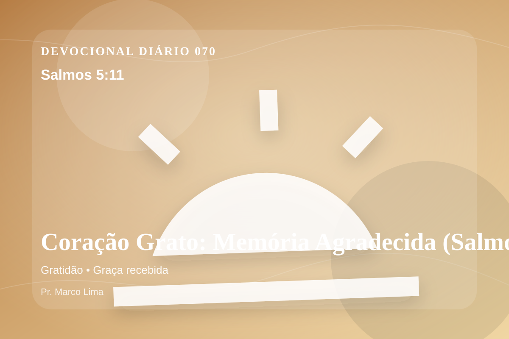

Coração Grato: Memória Agradecida (Salmos 5:11)
Mas se alegrem todos os que confiam em ti; clamai de alegria para sempre; porque tu os proteges; e fiquem contentes em ti aqueles que amam o teu nome.
Pensamento
Nesta nova leitura da mesma passagem, observe como Deus forma fidelidade em meio à pressão. A leitura de hoje convida você a diminuir o ruído, abrir a Bíblia com humildade e deixar que Salmos 5:11 fale com profundidade.
Salmos 5:11 chama o coração a ouvir Deus com reverência e responder com fé prática. A Palavra não foi dada para enfeitar pensamentos religiosos, mas para conduzir pessoas reais ao Senhor.
O tema de gratidão precisa ser recebido com simplicidade e seriedade. Quando essa verdade encontra resistência dentro de nós, é justamente ali que o Espírito deseja trabalhar. A gratidão bíblica desloca a atenção da falta para a fidelidade de Deus. Ela não nega a dor, mas ensina a reconhecer a presença e a bondade do Senhor mesmo em dias difíceis.
A Palavra convida você a abandonar desculpas. Onde houver pecado, confesse; onde houver incredulidade, peça fé; onde houver cansaço, volte-se para Cristo.
Arrependimento não é apenas sentir peso na consciência; é voltar-se para Deus, abandonar o caminho que entristece o Senhor e confiar que a graça de Cristo é suficiente para perdoar e transformar.
Este é o evangelho que sustenta toda aplicação: Jesus Cristo morreu pelos pecadores, ressuscitou em vitória e chama cada pessoa a responder com fé, arrependimento e uma vida rendida ao Seu senhorio.
Deus não chama você para uma religiosidade sem vida, mas para reconciliação com Ele por meio de Cristo. Essa reconciliação começa com fé humilde e arrependimento sincero.
Se o texto trouxe consolo, adore. Se trouxe confronto, arrependa-se. Se trouxe direção, obedeça. Em tudo, volte os olhos para Cristo.
Para Praticar Hoje
- Leia Salmos 5:11 lentamente e destaque uma palavra ou expressão central do texto.
- Confesse a Deus um pecado, resistência ou frieza espiritual que esta Palavra revelou.
- Declare sua fé em Jesus Cristo e pratique hoje uma atitude concreta de arrependimento e obediência.
Oração
Pai, eu tenho tanto que agradecer e tantas vezes esqueço. Salmos 5:11 me chama de volta ao reconhecimento. Abre meus olhos para ver as bênçãos que já recebi. Aproxima meu coração de Ti hoje.
{kind=link}